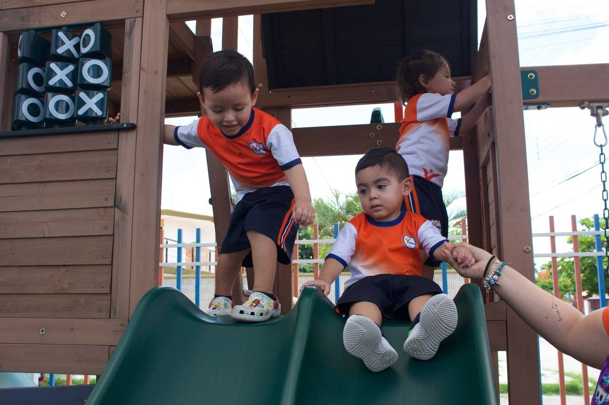
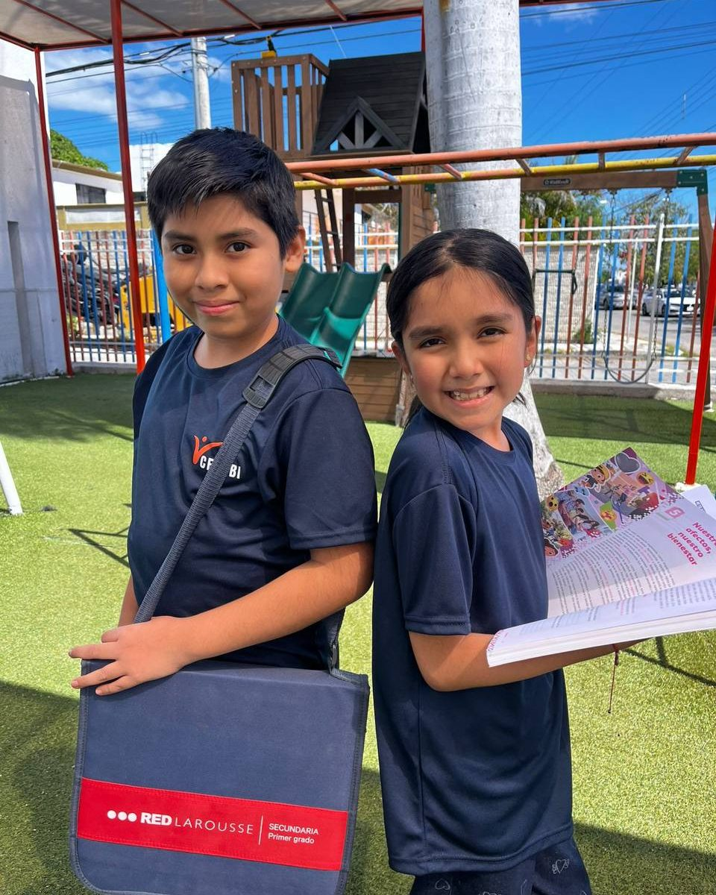

Somos familia CECUBI · Mérida, Yucatán
Un gran comienzo.
Un mejor futuro.
Crecer, descubrir y aprender. Una nueva historia en cada etapa de su vida.
Maternal · Preescolar · Primaria · Secundaria
♡ Educación con valores✧ Aprender para la vida

La esencia de CECUBI
Crecer también es
aprender a ser.
Cada pregunta abre una posibilidad. Cada descubrimiento, un nuevo camino.
Conoce nuestra comunidad y encuentra el siguiente paso para tu familia.
Hablemos de su futuro
Un camino para cada etapa
Pequeños pasos.
Grandes posibilidades.
Cuatro niveles educativos.
Una misma familia.


Instalaciones
Espacios para aprender,
convivir y crecer.


La mejor forma de conocernos es venir.
Organiza tu visita con nosotrosAdmisiones
Su próxima gran
historia empieza aquí.
Conversemos sobre el siguiente paso. Consulta disponibilidad, requisitos y costos directamente con el colegio.

Antes de
conocernos.
¿Qué niveles ofrece CECUBI?
Maternal, preescolar, primaria y secundaria. Selecciona el nivel en admisiones para preparar tu consulta por WhatsApp.
¿Cómo agendo una visita?
Elige “Agendar una visita” y continúa en WhatsApp. El equipo te ayudará a confirmar una fecha.
¿Dónde consulto costos y requisitos?
Solicita la información vigente al colegio por WhatsApp o al 999 151 1136.
¿Dónde están ubicados?
Calle 23 #365 x 38 y 40, C.P. 97138, Mérida, Yucatán. Ver en Google Maps ↗